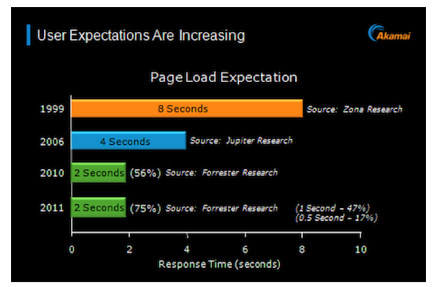
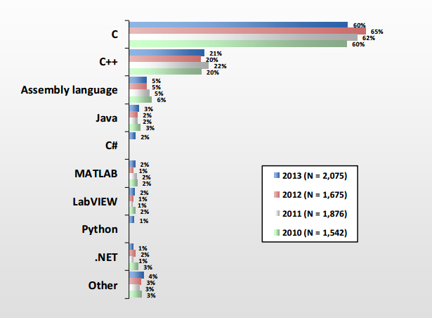
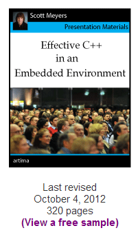
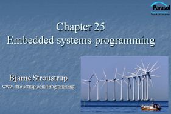
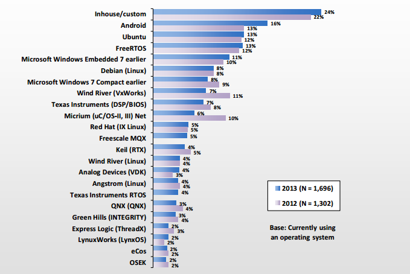
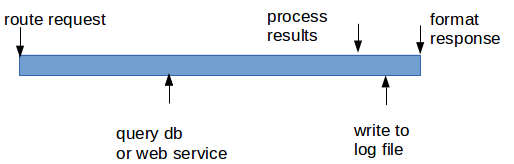

C++ Tutorial - Embedded Systems Programming - 2017
When we talk about embedded systems programming, in general, it's about writing programs for gadgets.
Gadget with a brain is the embedded system. Whether the brain is a microcontroller or a digital signal processor (DSP), gadgets have some interactions between hardware and software designed to perform one or a few dedicated functions, often with real-time computing constraints.
Usually, embedded systems are resource constrained compared to the desktop PC. Embedded systems, typically, have limited memory, small or no hard drives, and in some cases with no external network connectivity.

Picture: https://blogs.akamai.com - The Performance Arms Race

Picture: Programming languages for embedded systems
Presentation Materials: Effective C++ in an Embedded Environment (pdf) by Scott Meyers, 2012
http://www.artima.com/shop/effective_cpp_in_an_embedded_environment.

Presentation Materials: Embedded Systems Programming (ppt)
by Bjarne Stroustrup
or get it from http://www.stroustrup.com/Programming/.
According to LinuxDevices.com, Linux has emerged as the dominant OS for embedded systems, and it will reach 70% of the market by 2012.
Go to Embedded Linux.
Here are some characteristics of embedded systems, and few systems suffer all of these constrains.
- Reliability - failure is very expensive.
- Limited Resources - A resource is something of which a machine has only a limited supply. As an embedded systems programmer, we get it through some explicit action such as "acquire" or "allocate" and return it through "release", "free", or "deallocate" to the system. It could be memory, file handles, network connection or communication channels such as sockets, and locks. Or it could be processor cycles, power.
- Real-time Response.
- A system may be Running Forever.
The characteristics of embedded systems affect the embedded systems programming:
- Correctness - producing the results at the right time, in the right order, and using only an acceptable set of resources.
- Fault tolerance
- No downtime.
- Real-time constraints.
- hard real time: if a system's response must occur before a deadline
- soft real time: same as the hard real time but an occasional miss can be affordable
- Predictability - In programming embedded systems, predictability usually means the predictability of the time it takes for certain operation. So, operations that are not guarantee a response within a given time, should not be used. For example, a linear search of a list is an unpredictable operation because its number of elements is unknown.
- Concurrency.
So, when we do embedded systems programming, we should be aware of the environment and its use. In other words, domain knowledge is essential for designing and implementing a system with a good protection against errors.
- We're dealing with specialized features of RTOS.
- We're using a non-hosted environment. In other words, we're using a language right on top of hardware without any protection or help from the traditional OSs.
- We're dealing with device drivers/hardware device APIs.
Following features of C++ language are not predictable:
- new and delete
Static memory poses no special problem in embedded systems programming since all is taken care of before the program starts to run and long before a system is deployed.
Stack memory can be a problem because it is possible to use too much of it. One way is to avoid recursive functions and stick to iterative implementation.
Dynamic memory allocation is usually banned or restricted. The new and malloc() are either banned or using them is restricted to a startup period, and delete is banned because of the predictability and fragmentation.
- predictability - allocation delays
The time it takes to find a free chunk of memory of a specific size depends on what's been already allocated. - fragmentation
After several memory allocations, fragments (hole) may take up much of the memory.
- predictability - allocation delays
- Pool is a data structure from which we can allocate object of a given type and later deallocate such object. A pool contains a maximum number of objects; that number is specified when the pool is created. So, it gives us constant time operations without any fragmentation.
- Stack is a data structure from which we can allocate chunks of memory and deallocate the last allocated chunk. Stacks grow and shrink only at the top without any fragmentation, and it guarantees constant time operation.
- global objects can be allocated at startup time so that set can set aside a fixed amount of memory.
- C++ standard library containers such as vector, map, etc. and the standard string are not to be used because they indirectly use new.
However, there are two data structures that are particularly useful for predictable memory allocations: stacks, pools, and global objects :
Exceptions
How can we catch all exceptions and how long it will take to find a matching catch.
The throw is typically banned in hard real-time applications. Instead, we may rely on return codes to do error handling.
Avoid language features and programming techniques that have proved error-prone. Pointers!
- Explicit conversions which are unchecked and unsafe - avoid them.
- unchecked conversion
Embedded systems often require a programmer to access a specific memory location (0xffa2):class Driver; Driver *ptr = reinterpret_cast<Driver*>(0xffa2);
In this low-level programming, we should be aware that the correspondence between a hardware resource (register's address) and a pointer to the software that manipulates the hardware resource is brittle. Though the reinterpret_cast from an int to a pointer type is crucial link for connections between an application and its hardware resources, we should not expect a code using (unchecked) reinterpret_cast to be portable. - Passing pointers to array elements - An array is often passed to a function as a pointer to an element. Therefore, they lose their size, so that the receiving function cannot directly tell how many elements are pointed to. This is a cause of many bugs.
Realtime applications are those that need to respond in a timely fashion to input. Frequently, such input comes from an external sensor or a specialized input device, and output takes the form of controlling some external hardware.
Although many realtime applications require rapid responses to input, the defining factor is that the response is guaranteed to be delivered within a certain deadline time after the triggering event.
The provision of realtime responsiveness, especially where short response times are demanded, requires support from the underlying operating system.
However, most OS does not natively provide such support because the requirements of realtime responsiveness can conflict with the requirements of multiuser timesharing operating systems.
Realtime variants of Linux have been created, and recent Linux kernels are moving toward full native support for realtime applications.
Picture source: OS for embedded systems - Embedded Market Study, 2013
An RTOS is an operating system designed to meet strict deadlines which associated with tasks. In RTOS, therefore, missing the deadline can cause undesired or even catastrophic outcome.
I/O Latency
| I/O type | cycles |
|---|---|
| L1 | 3 |
| L2 | 14 |
| RAM | 250 |
| Disk | 41,000,000 |
| Network | 240,000,000 |
| L2 | RAM | Disk | Network | |
|---|---|---|---|---|
| L1 | 5 | 83 | 13,666,666 | 80,000,000 |
| L2 | 18 | 2,928,571 | 17,142,857 | |
| RAM | 164,000 | 960,000 | ||
| Disk | 6 |
The followings are the characteristics of RTOS:
- Context switching latency:
Context switch latency is the time from one context switching to another and it should be short. In other words, the time taken while saving the context of current task and then switching over to another task should be short. In general, switching context involved saving the CPU's registers and loading a new state, flushing the caches, and changing the virtual memory mapping. Context switch latency is highly architecture dependent and different hardware may get different results. - Interrupt latency:
Interrupt latency is the time from interrupt generation until the interrupt service routine starts executing.
Factors that affect interrupt latency include the processor architecture, the processor clock speed, the particular OS employed, and the type of interrupt controller used.
Minimum interrupt latency depends mainly on the configuration of the interrupt controller, which combines interrupts onto processor lines, and assigns priority levels (visit Priority Inversion) to the interrupts.
Maximum interrupt latency depends mainly on the OS.
For more on Interrupt and Interrupt Latency, please visit my another page Interrupt & Interrupt Latency - Dispatch latency:
The time between when a thread is scheduled and when it begins to execute. Theoretically, in a preemptive OS the dispatch latency for a high-priority thread should be very low. However, in practice preemptive OSs are non-preemptive at times; for example, while running an interrupt handler. The duration of the longest possible non-preemptive interval is said to be the worst-case dispatch latency of an OS. - Reliable and time bound inter process mechanisms should be in place for processes to communicate with each other in a timely manner.
- Multitasking and task preemption:
An RTOS should have support for multitasking and task preemption. Preemption means to switch from a currently executing task to a high priority task ready and waiting to be executed. - Kernel preemption:
Most modern systems have preemptive kernels, designed to permit tasks to be preempted even when in kernel mode.
The bright side of the preemptive kernel is that sys-calls do not block the entire system.
However, it introduces more complexity to the kernel code, having to handle more end-cases, perform more fine grained locking or use lock-less structures and algorithms. - Note: Preemptive:
Preemptive means that the rules governing which processes receive use of the CPU and for how long are determined by the kernel process scheduler.
*Most of the requests are spending time just waiting due to I/Os
In code meant to be portable, use should use <limits> to make sure our assumption about sizes is correct. Here is the list of sizes of the primitive types:
- bool - 1 bit, but takes up a byte
- char - 8 bits
- short - 16 bits
- int - 32 bits, but many embedded systems have 16-bit ints
- long int - 32 bits or 64 bits
#include <iostream>
#include <bitset>
#include <iomanip>
int main( )
{
using namespace std;
int i;
while(cin >> i)
cout << dec << i << "=="
<< hex << "0x" << i << "=="
<< bitset<8*sizeof(int)>(i)<< endl;
return 0;
}
Outoput is:
4 4==0x4==00000000000000000000000000000100 8 8==0x8==00000000000000000000000000001000 16 16==0x10==00000000000000000000000000010000 32 32==0x20==00000000000000000000000000100000 127 127==0x7f==00000000000000000000000001111111
In the code, to print the individual bits of the integer, we used a standard library bitset:
bitset<8*sizeof(int)>(i)
A bitset is a fixed number of bits. In the above example, we used the number of bits in an int, which is 8*sizeof(int). Then, we initialized that bitset with i.
Another example:
#include <iostream>
#include <bitset>
int main( )
{
using namespace std;
const int max = 8;
bitset<max> b;
while(cin >> b) {
cout << b << endl;
for(int i = 0; i < max; ++i) cout << b[i];
cout << endl;
}
}
Output is:
10100111 10100111 11100101
Let's look at the following example which looks innocent.
#include <iostream>
#include <vector>
int main( )
{
using namespace std;
const int max = 10;
vector<int> v(max,77);
for(int i = 0; i < v.size(); ++i)
cout << v[i] << endl;
}
When we compile it, we get a warning something like this:
signed/unsigned mismatch
That's because the index i is signed integer, but v.size() is unsigned integer. Mixing signed and unsigned could lead to disaster. For instance, the loop variable i might overflow. In other words, v.size() might be larger than the largest signed int. Then, i would reach the highest value that could represent a positive integer in a signed int. Then, the next ++ couldn't yield the next-highest integer and would instead result in a negative value. The loop would never terminate!
Here, we have two choices:
- vector<int>::size_type
for(vector<int>::size_type i = 0; i < v.size(); ++i) cout << v[i] << endl;
- iterator
for(vector<int>::iterator it = v.begin(); it != v.end(); ++it) cout << *it << endl;
The size_type is guaranteed to be unsigned, so the first form has one more bit to play with than the int version. That can be significant, but it is still gives only a single bit of range. The loop using iterators has no such limitation.
Here is an advice on arithmetic operation with unsigned integer by Bjarne Stroustrup
"Avoid that when you can
-Try never to use unsigned just to get another bit of precision
-If you need one extra bit, soon, you'll need another
-Don't mix signed and unsigned in an expression
You can't completely avoid unsigned arithmetic
Indexing into standard library containers uses unsigned
(in my opinion, that's a design error)"
For more on the issue of signed integer and unsigned integer in the embedded systems programming, please visit the following pages:
When do we need to manipulate bits?
- flags as hardware indicators
- low-level communications - we need to extract from byte streams
- graphics - we need to compose picture out of several images
- encryption
Here is an example of extracting information from a short integer.
#include <iostream>
#include <bitset>
int main( )
{
using namespace std;
const int max = 8;
short val = 4;
unsigned char left = val & 0xff; // leftmost (least significant) byte
cout << bitset<max>(left) << endl;
unsigned char right = (val >> 8) & 0xff; // rightmost (most significant) byte
cout << bitset<max>(right) << endl;
val = 256;
right = (val >> 8) & 0xff;
cout << bitset<max>(right) << endl;
val = 2*val;
right = (val >> 8) & 0xff;
cout << bitset<max>(right) << endl;
val = -8;
bool sign_bit = val & 0x8000; // sign bit
cout << sign_bit << endl;
}
Output is:
00000100 00000000 00000001 00000010 1
The operations are known as shift and mask. We shift to place the bits we want to consider to the rightmost (least significant) part of the word where they are easy to manipulate. We mask using and (&) together with a bit pattern such as
Here is another example clearing 1st and 3rd bits:
#include <iostream>
using namespace std;
#define MASK (0xF5)
void printBinary(unsigned int n)
{
int i = 7;
while(i >= 0) {
cout << (n >> i & 1);
i--;
}
cout << endl;
}
int main()
{
unsigned int a = 15;
cout << "MASK : ";
printBinary(MASK);
cout << "a : ";
printBinary(a);
a &= MASK;
cout << "a & MASK: ";
printBinary(a);
return 0;
}
Output:
MASK : 11110101 a : 00001111 a & MASK: 00000101
Example: enum, bit set and testing bits:
enum BIT_VECTOR
{
bit7 = 1<<7, bit6 = 1<<6, bit5 = 1<<5, bit4 = 1<<4,
bit3 = 1<<3, bit2 = 1<<2, bit1 = 1<<1, bit0 = 1
};
int main()
{
unsigned char val = bit4 | bit2; // val = 16 + 4 = 20
val |= bit1; // val = 16 + 4 + 2 = 22
if(val & bit1); // bit1 is set? yes!
unsigned char new_val = val & (bit3 | bit4); // new_val = 16
BIT_VECTOR another = BIT_VECTOR(bit3 | bit1); // 8 + 2 = 10
return 0;
}
Bit Field example:
The declaration of a bit-field has the form inside a structure:
struct
{
type [member_name] : width ;
};
When we use the following structure, we end up using just 4 byte rather than 4+4+4+4=16 bytes:
#include <iostream>
using namespace std;
struct bitfield {
unsigned int b1 : 1; // will use 1 bit
unsigned int b2 : 1; // 1 bit
unsigned int nibble : 4; // 4 bits
unsigned int byte : 8; // 8 bits
} bf;
int main()
{
cout << sizeof(bf) << endl; // prints out 4
return 0;
}
For more on bit manipulation, please visit
http://www.bogotobogo.com/cplusplus/quiz_bit_manipulation.php where the following issues are discussed:
- Bitwise Operations
- Setting and Clearing a Bit
- Displaying an Integer with Bits
- Converting Decimal to Hex
- Bit Field and Struct
- Bit Field, Struct & Union
- The Number of Bits Set in an Integer (Number of Ones)
- The Bit Set Position of an Integer
- In-Place Integer Swap with Bit Manipulation
- The Number of Bits Required to Convert an Integer A to Integer B
- Swap Odd and Even Bits in an Integer
- What (n & (n-1) == 0) is checking?
- Two's Complement
- Unsigned & signed integers
- Unsigned & signed integers as a loop variable
- What does this doing? n ^= INT_MIN
- Flipping n-th bit of an integer
- Big Endian & Small Endian
For keywords such as volatile or const volatile, visit C++ Keywords.
From wiki
Firstly, Embedded processors can be broken into two broad categories: ordinary microprocessors (µP) and microcontrollers ((µC), which have many more peripherals on chip, reducing cost and size. Contrasting to the personal computer and server markets, a fairly large number of basic CPU architectures are used; there are Von Neumann as well as various degrees of Harvard architectures, RISC as well as non-RISC and VLIW; word lengths vary from 4-bit to 64-bits and beyond (mainly in DSP processors) although the most typical remain 8/16-bit. Most architectures come in a large number of different variants and shapes, many of which are also manufactured by several different companies.
A long but still not exhaustive list of common architectures are: 65816, 65C02, 68HC08, 68HC11, 68k, 8051, ARM, AVR, AVR32, Blackfin, C167, Coldfire, COP8, Cortus APS3, eZ8, eZ80, FR-V, H8, HT48, M16C, M32C, MIPS, MSP430, PIC, PowerPC, R8C, SHARC, SPARC, ST6, SuperH, TLCS-47, TLCS-870, TLCS-900, Tricore, V850, x86, XE8000, Z80, AsAP etc.
COMs gain traction as time-to-market accelerators for OEMs
By combining COM express modules with off-the-shelf COMs, suppliers are able to offer several different configurations of CPU boards and leverage COMs' interchangeable characteristics. CPU vendors can thus offer a fairly wide range of boards without incurring high design and inventory carrying costs.
PC/104 module family under pressure
Although VDC data projects the PC/104 family will experience a single-digit rebound from the low points of the recent recession, vendors will have to commit resources to developing newer strategies in order for this technology to remain viable. Otherwise, the recovery of these architectures is likely to stall or decline in 2011.
Asia continues to rise in the development of embedded technology
2011 will see further strengthening of the Asian embedded supplier community as supply chain synergies, R&D; capabilities and fabrication automation increases between upstream and downstream ecosystem partners.
China's growth will power MCU market
Continued economic growth in China will drive the country's automotive market and expand the need for MCU (microcontroller unit) technology. Despite reduction in government subsidies, VDC expects the Chinese automotive market to expand substantially through 2015, driving adoption of MCU solutions.
Suppliers will invest in services value chain
While embedded hardware margins show signs of stability in 2011, it's clear to VDC that leading embedded suppliers also recognize the value their clients place on a range of services capabilities. As a result, many leading suppliers will try to differentiate by investing in critical aspects of the services value chain, from consulting capabilities to enhanced warranty and end-of-life policies.
FPGA and GPU will expand into a number of market segments
The medical, industrial automation and military segments provide an attractive opportunity for FPGA (Field Programmable Gate Array) devices. From imaging equipment to diagnostic devices, there is a need for adaptable health care, factory control and military C4 solutions. The programmability, flexibility and reduced NRE (non-recurring engineering) costs associated with FPGAs will lend themselves to broader adoption in these markets.
Tier 2/Tier 3 OEMs and ISVs will become more important
Investment in solutions requiring embedded platforms continues to rebound; however, the market will still be driven by small- to mid-sized projects. This is related to the slow return of larger, blanket purchase orders let by Tier 1 accounts and to the user community preferences for projects with smaller footprints that fit within narrower application definitions and require short, sharply defined systems integration support. These projects are tailor-made for local, expert ISVs and ISIs, as well as Tier 2/Tier 3 OEMs.
The market explores HaaS (Hardware as a Service) bundles
Broad market expansion and deep application penetration of remote monitoring and control capabilities will advance across a number of market segments, foretelling a broader migration to managed services solution development and deployment models in supervisory monitoring and control applications. These embedded application clouds will require local points of presence (POPs) or on-site infrastructure and hardware rolled into service level agreements (SLAs) supporting the software and service delivery portions of contracts.
Cross-platform processor suppliers learn to play nice
From broader, bigger, more aggressive, public licensing agreements to M&A;, the market will force suppliers of CPU, FPGA and GPU (graphics processing unit) technologies to collaborate more in 2011. VDC Research's surveys of hundreds of OEMS across a number of embedded markets reveal significant growth in OEM plans to develop solutions on hybrid platforms incorporating two or more of these technologies.
Competition will intensify and growth will accelerate
Even if the market does not return to pre-recession levels, growth will accelerate during 2011. VDC sees virtually every vertical market growing more than five percent, and most technology categories achieving the same five percent CAGR. However, profitability results may not be so positive. Demand for stable technologies, brutal price concessions and expanded services requirements will provide opportunities for differentiation and revenues, but not necessarily margin.
Android to catalyze further growth in commercial Linux market
As device manufacturers take Android into new application classes beyond mobile, the commercial Linux market will experience further growth.
Multi-OS systems will grow in designs
More application classes will have sophisticated UI functionality that is not supported by traditional OSs and end-users will seek out multi-OS systems.
Virtualization in embedded and mobile systems will increase
Driven by hardware bill of materials savings and reduced concerns regarding additional run-time execution latencies and costs, operating system virtualization will provide increased growth opportunities, and therefore will continue to be a significant focus for many suppliers.
Symbian's loss to become MeeGo's gain
Intel's increasing focus on embedded combined with Symbian's loss of strategic direction will drive additional gains for MeeGo as Nokia turns their attention toward the Linux-based platform.
OEMs to increase focus on the use of web security test tools
Increased interaction with the cloud and web-based content by more embedded device classes will increase OEM focus on use of web security test tools.
Telecom vertical will reaccelerate spend on commercial products
The increasing burden of mobile device data usage is driving the need for investment in wireless infrastructure and the telecom vertical market will reaccelerate spending on commercial products.
Microsoft will regain relevance in the mobile phone sector
Riding the wave of Windows Phone 7 buzz, Microsoft will re-emerge as a leading player in the mobile phone arena.
Another acquisition to come?
Following a string of high profile acquisitions in 2009/2010, VDC anticipates yet another major embedded real-time operating system supplier will get acquired in 2011.
From wiki
Embedded Linux is the use of Linux in embedded computer systems such as mobile phones, personal digital assistants, media players, set-top boxes, and other consumer electronics devices, networking equipment, machine control, industrial automation, navigation equipment and medical instruments. According to survey conducted by Venture Development Corporation, Linux was used by 18% of embedded engineers.
Linux has been ported to a variety of processors not always suited for use as the processor of desktop or server computers, such as various CPUs including ARM, AVR32, Blackfin, ETRAX CRIS, FR-V, H8300, IP7000 M32R, m68k, MIPS, mn10300, PowerPC, SuperH, or Xtensa processors, as an alternative to using a proprietary operating system and toolchain.
The advantages of embedded Linux over proprietary embedded operating systems include no royalties or licensing fees, a stable kernel, a support base that is not restricted to the employees of a single software company, and the ability to modify and redistribute the source code. The disadvantages include a comparatively larger memory footprint (kernel and root file system), complexities of user mode and kernel mode memory access and complex device drivers framework.
There are non-proprietary embedded operating systems that share the open-source advantages of Linux, without the memory requirements that make Linux unsuitable for many embedded applications.
- Embedded Systems Programming I - Introduction
- Embedded Systems Programming II - gcc ARM Toolchain ans Simple Code on Ubuntu and Fedora
- Embedded Systems Programming III - Eclipse CDT Plugin for gcc ARM Toolchain
- Memory-mapped I/O vs Port-mapped I/O
- Interrupt & Interrupt Latency
- Little Endian/Big Endian & TCP Sockets
- Bit Manipulation
- Linux Processes and Signals
- Linux Drivers 1
Ph.D. / Golden Gate Ave, San Francisco / Seoul National Univ / Carnegie Mellon / UC Berkeley / DevOps / Deep Learning / Visualization